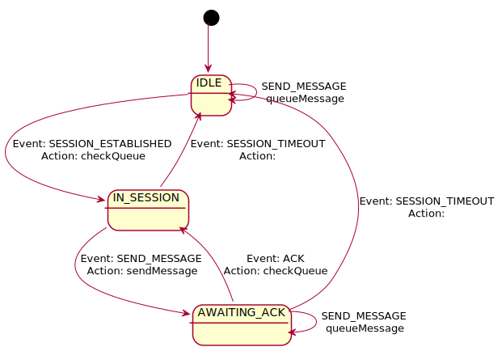

Transmit message to the peer.
| SEND_MESSAGE | ACK | SESSION_ESTABLISHED | SESSION_TIMEOUT | |
|---|---|---|---|---|
| IDLE | queueMessage returns:
transition : none |
transition : none |
checkQueue returns:
transition : IN_SESSION |
transition : none |
| IN_SESSION | sendMessage returns:
transition : AWAITING_ACK |
transition : none |
transition : none |
noAction transition : IDLE |
| AWAITING_ACK | queueMessage returns:
transition : none |
checkQueue returns:
transition : IN_SESSION |
transition : none |
noAction transition : IDLE |
| Events | |
|---|---|
| SEND_MESSAGE | |
| ACK | |
| SESSION_ESTABLISHED | |
| SESSION_TIMEOUT | |
| States | |
|---|---|
| IDLE | |
| IN_SESSION | |
| AWAITING_ACK | |
| Actions | |
|---|---|
| sendMessage |
Transmit message to the peer.
Returns:
|
| queueMessage |
Place message into queue.
Returns:
|
| checkQueue |
Check queue for messages; if found pop from queue and return SEND_MESSAGE.
If no message is found in the queue return noEvent.
Returns:
|
| transition | |